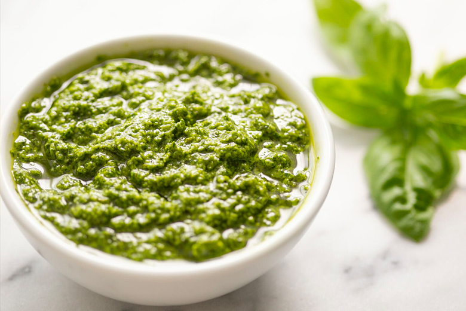

Fresh Basil Pesto

Homemade pesto is one of the best ways to enjoy a bounty of fresh basil. It's great on pasta, baked potatoes, pizza, or bread. Make it in just 15 minutes!
Description
Every year we plant basil and every year the plants do so well that we can't use it up fast enough. What to do? Basil pesto, of course! Here is a simple recipe.
Ingredients
- 2 cups fresh basil leaves
- 1/2 cup freshly grated Parmesan cheese
- 1/2 cup extra virgin olive oil
- 1/3 cup pine nuts
- 3 cloves garlic
- 1/4 teaspoon salt
- 1/8 teaspoon freshly ground black pepper
Method
- Place the basil leaves and pine nuts into the bowl of a food processor and pulse several times.
- Add the garlic and Parmesan or Romano cheese and pulse several times more. Scrape down the sides of the food processor with a rubber spatula.
- While the food processor is running, slowly add the olive oil in a steady small stream. Adding the olive oil slowly while the processor is running will help it emulsify and help keep the olive oil from separating. Occasionally, stop to scrape down the sides of the food processor.
- Add salt and freshly ground black pepper to taste.
- Toss with pasta for a quick sauce, dollop over baked potatoes, or spread onto crackers or toasted slices of bread.